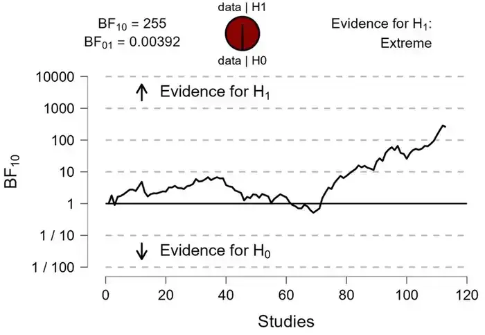

The effect
In a ganzfeld experiment the visual field is made uniform — half ping-pong balls over the eyes, a red light — and the auditory field is filled with white noise. Deprived of structure, the brain begins to generate it: within minutes, most participants report shapes, colours, scenes and sometimes voices. The name is German for 'whole field'.
Maps, diagrams and images


The effect is well established and is a standard demonstration in perception teaching. It is the mild end of the same continuum as sensory deprivation, and it explains a great deal of what happens in darkened rooms, long drives and floatation tanks.
What was built on it
From the 1970s the ganzfeld was used in parapsychology as a telepathy test: one participant views a target image, the other sits in the ganzfeld and describes what comes to mind, and a judge picks the matching image from a set. Meta-analyses reported small positive effects; the results have been contested on methodological grounds — sensory leakage, randomisation, analysis flexibility — and independent replications have been inconsistent.
Documented: the ganzfeld produces vivid imagery in most participants within minutes.
Documented: the effect is a consequence of removing structure from sensory input.
Contested: whether ganzfeld telepathy experiments show an effect beyond chance. The meta-analytic signal is small and the methodological criticism is substantial.
Not established: telepathy. The imagery is generated by the participant's brain, which is what the effect predicts.
The archive's label: the effect is documented; the psi claim built on it is not, and they are different claims that share a name.
Why it is in the archive
Because it is the cleanest case of a real phenomenon being used as the apparatus for an unreal one, and because the distinction is invisible in most popular writing: 'the ganzfeld works' is true, and 'therefore telepathy' does not follow.
Open resources on this topic
- PapersOpen-access articles: DOAJ · PubMed Central · Internet Archive Scholar
- BooksPublic-domain and borrowable copies: Open Library · Project Gutenberg · Google Books · Internet Archive
Cite this page
Momin, S. (2026). The Ganzfeld Effect. The Larger World Archive. https://drsamonline.github.io/LARGE_GLOBE/ganzfeld-effect.htmlMomin, Sohil. “The Ganzfeld Effect.” The Larger World Archive, 2026, https://drsamonline.github.io/LARGE_GLOBE/ganzfeld-effect.html.Momin, Sohil. “The Ganzfeld Effect.” The Larger World Archive, 2026. https://drsamonline.github.io/LARGE_GLOBE/ganzfeld-effect.html.@misc{the2026ganzfeld,
author = {Momin, Sohil},
title = {The Ganzfeld Effect},
year = {2026},
howpublished = {The Larger World Archive},
url = {https://drsamonline.github.io/LARGE_GLOBE/ganzfeld-effect.html},
note = {Last reviewed 20 November 2026}
}Last reviewed 20 November 2026 · Corrections policy · this page is not peer reviewed
Sources for this page
- Wikipedia, “Ganzfeld effect” — the phenomenon and its usesen.wikipedia.org
- Wikipedia, “Ganzfeld experiment” — the parapsychology and its criticismen.wikipedia.org
- Wikipedia, “Sensory deprivation” — the family of effectsen.wikipedia.org
- Wikipedia, “Hallucination” — why the brain generates contenten.wikipedia.org